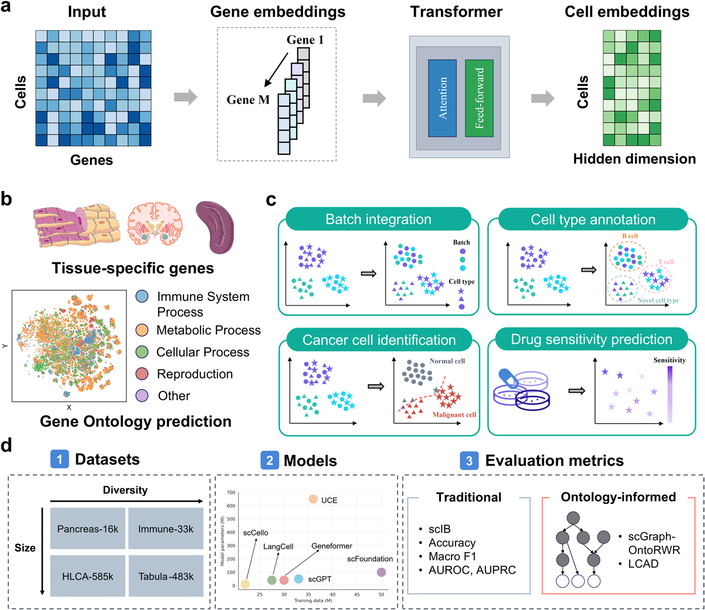
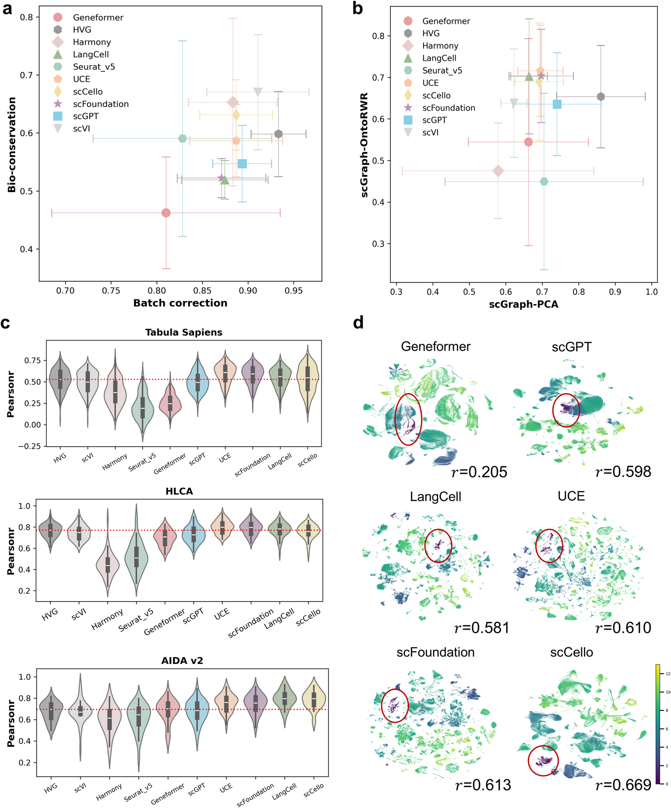
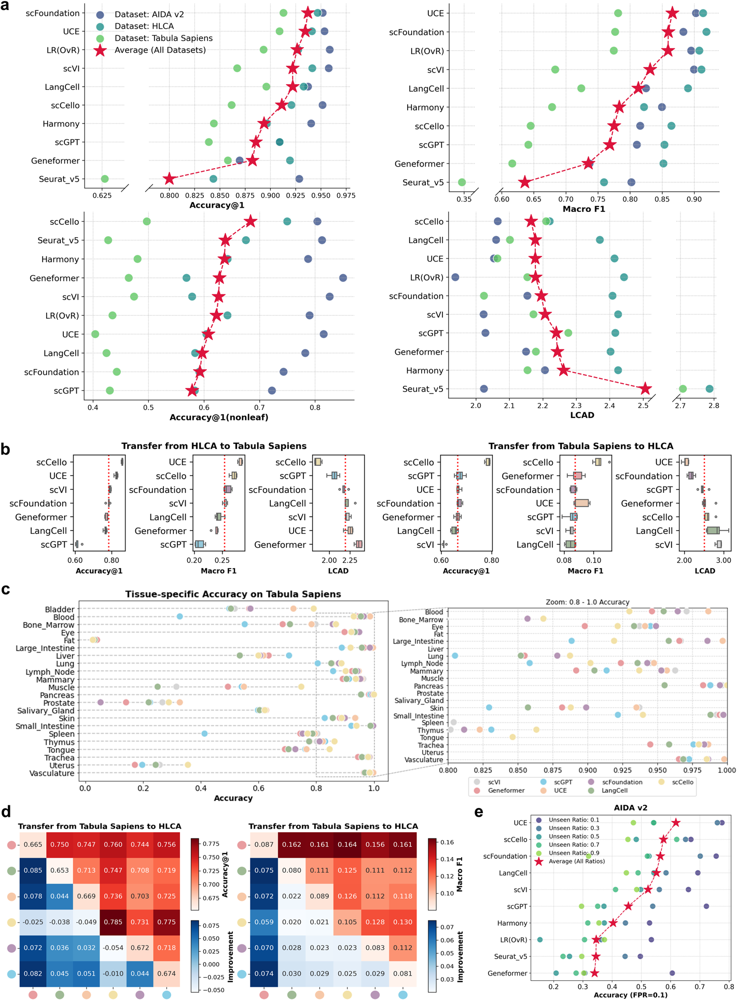
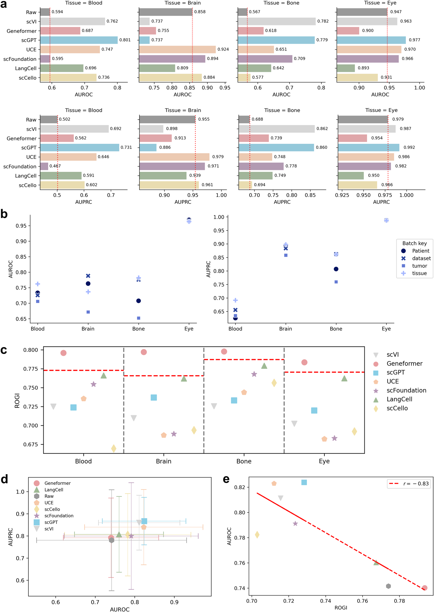
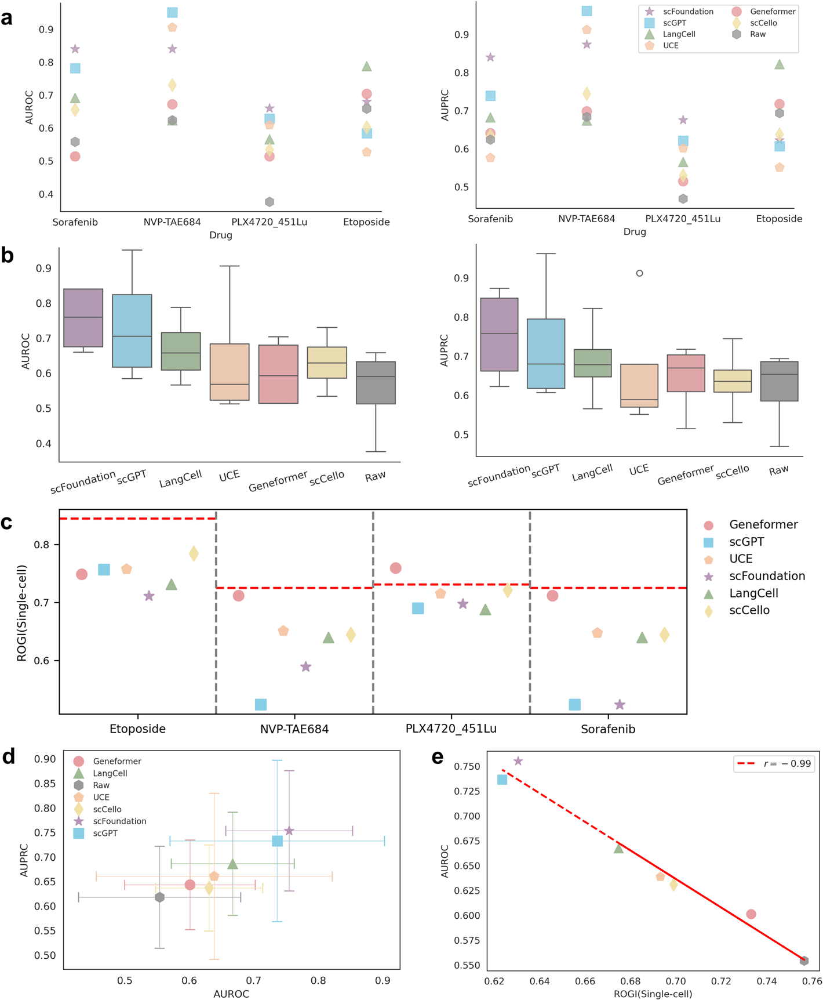

Genome Biology · October 2025 · DOI: 10.1186/s13059-025-03781-6
Do single-cell foundation models genuinely capture biological structure,
or merely statistical co-occurrence patterns?
🧬 Benchmarking · Foundation Models · Single-Cell Genomics · Computational Biology
Single-cell foundation models (scGPT, Geneformer, UCE, scCello, LangCell, scFoundation) have generated considerable enthusiasm, yet prior benchmarking studies consistently concluded:
"Simple baselines (HVG, scVI) perform comparably — what is the added value?"
Core issue: standard metrics (scIB) evaluate task performance without assessing whether models capture biologically meaningful relational structure.

Fig. 1 — Overview of the benchmarking framework: model architectures, downstream tasks, and evaluation metrics (classical + ontology-informed)
| Metric | What it measures |
|---|---|
| scGraph-OntoRWR | Consistency between cell-type relational structure in the latent space and the Cell Ontology graph |
| LCAD (Lowest Common Ancestor Distance) | Semantic severity of annotation errors — conflating ontologically proximal types is penalized less than conflating distant ones |
Key finding: scCello and UCE substantially outperform scVI on ontology-informed metrics, even where scIB scores were comparable.
scCello achieves a +38.8% improvement over scVI in Pearson correlation with the Cell Ontology (PPC).

Fig. 2 — Batch integration: classical scIB metrics vs. ontology-informed metrics (scGraph-OntoRWR), with UMAP visualizations colored by ontological proximity

Fig. 3 — Cell type annotation: cross-dataset transfer (Accuracy, Macro F1, LCAD) and robustness to unseen cell types
Unlike scVI, scFMs allow dataset-specific embedding extraction without gene filtering, preserving biologically informative signal across heterogeneous datasets.

Fig. 4 — Cancer cell identification: AUROC/AUPRC stratified by tissue type and batch key

Fig. 5 — Drug sensitivity prediction: aggregated AUROC/AUPRC across four drugs and drug-specific ROGI scores
💡 Critical observation: ROGI (ontological coherence of embeddings) is a strong predictor of downstream performance — correlation with AUROC reaches r = −0.99 in drug sensitivity prediction. Geometrically well-structured latent spaces directly translate into superior clinical task performance.
📄 Genome Biology 26:334 · DOI: 10.1186/s13059-025-03781-6